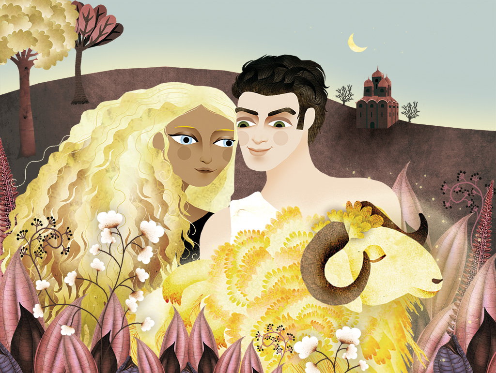

Représentations de Médée
Médée n’est pas seulement la fiancée de Jason. C’est un personnage très important qui a intéressé les artistes tout au long des siècles. A la fois princesse et magicienne, parfois gentille, parfois méchante elle est à la fois une jeune fille fragile et une sorcière dangereuse dont il faut se méfier.


Les lieux du récit
Jason et les argonautes voyagent beaucoup. Voyons ensemble par où ils sont passés.


Sciences
Pour pêcher, pour voyager ou pour faire du commerce, les hommes ont toujours eu besoin de véhicules qui leur permettent de se déplacer sur l’eau. Mais au fil du temps, les bateaux ont beaucoup évolué.


Les noms des personnages
Il y a beaucoup de noms à retenir pour comprendre les histoires que nous racontons. Le glossaire est là pour te rappeler qui est qui.